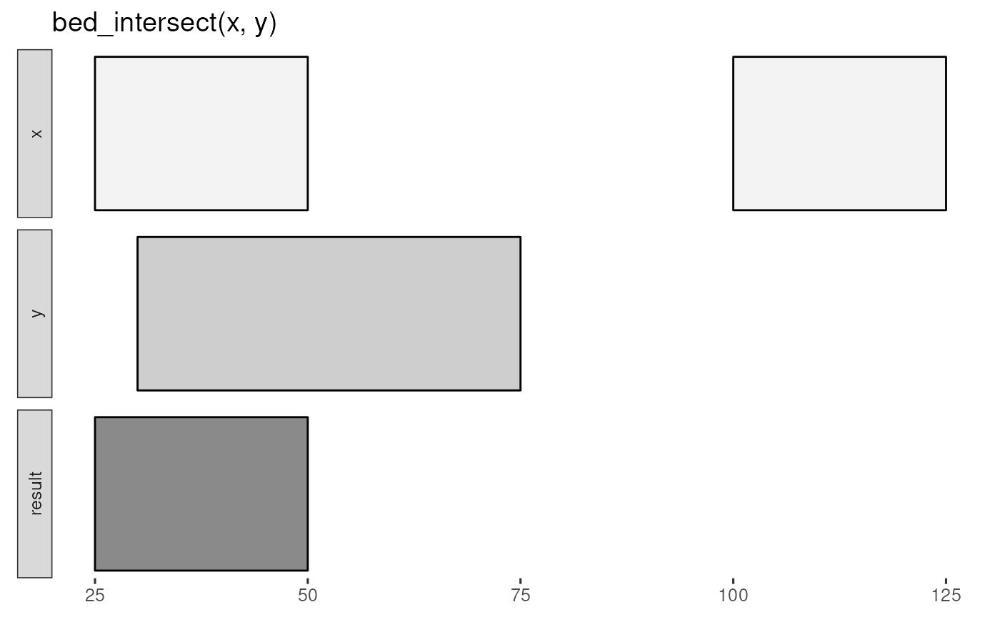
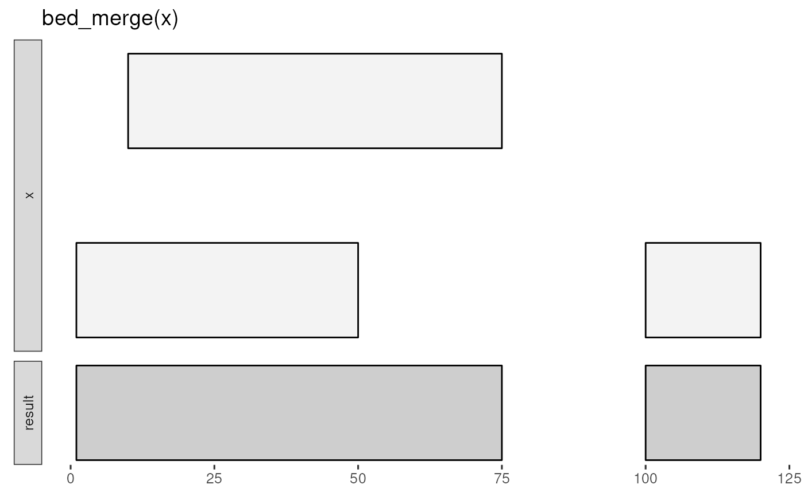

Why valr?
Why another tool set for interval manipulations? There are several other software packages available for genome interval analysis. However, based on our experiences teaching genome analysis, we were motivated to develop a toolset that:
- Combines analysis and visualization in RStudio.
- Can be used to generate reports with Rmarkdown.
- Is highly extensible. New tools are quickly implemented on the R side.
- Leverages the “modern R” syntax, using
dplyrand the pipe operator frommagrittr(%>%). - Maximizes speed by implementing compute-intensive algorithms in
Rcpp. - Facilitates interactive visulaizations with
shiny.
valr can currently be used for analysis of pre-processed data in BED and related formats. We plan to support BAM and VCF files soon via tabix indexes.
Familiar tools, natively in R
The functions in valr have similar names to their BEDtools counterparts, and so will be familiar to users coming from the BEDtools suite. Similar to pybedtools, valr has a terse syntax:
library(valr) library(dplyr) snps <- read_bed(valr_example('hg19.snps147.chr22.bed.gz'), n_fields = 6) genes <- read_bed(valr_example('genes.hg19.chr22.bed.gz'), n_fields = 6) # find snps in intergenic regions intergenic <- bed_subtract(snps, genes) # distance from intergenic snps to nearest gene nearby <- bed_closest(intergenic, genes) nearby %>% select(starts_with('name'), .overlap, .dist) %>% filter(abs(.dist) < 1000) #> # A tibble: 285 x 4 #> name.x name.y .overlap .dist #> <chr> <chr> <int> <int> #> 1 rs2261631 P704P 0 -268 #> 2 rs570770556 POTEH 0 -913 #> 3 rs538163832 POTEH 0 -953 #> 4 rs9606135 TPTEP1 0 -422 #> 5 rs11912392 ANKRD62P1-PARP4P3 0 105 #> 6 rs8136454 BC038197 0 356 #> 7 rs5992556 XKR3 0 -456 #> 8 rs114101676 GAB4 0 474 #> 9 rs62236167 CECR7 0 262 #> 10 rs5747023 CECR1 0 -387 #> # … with 275 more rows
Input data
valr assigns common column names to facilitate comparisons between tbls. All tbls will have chrom, start, and end columns, and some tbls from multi-column formats will have additional pre-determined column names. See the read_bed() documentation for details.
bed_file <- valr_example("3fields.bed.gz") read_bed(bed_file) # accepts filepaths or URLs #> # A tibble: 10 x 3 #> chrom start end #> <chr> <int> <int> #> 1 chr1 11873 14409 #> 2 chr1 14361 19759 #> 3 chr1 14406 29370 #> 4 chr1 34610 36081 #> 5 chr1 69090 70008 #> 6 chr1 134772 140566 #> 7 chr1 321083 321115 #> 8 chr1 321145 321207 #> 9 chr1 322036 326938 #> 10 chr1 327545 328439
valr can also operate on BED-like data.frames already constructed in R, provided that columns named chrom, start and end are present. New tbls can also be contructed using trbl_interval().
bed <- trbl_interval( ~chrom, ~start, ~end, "chr1", 1657492, 2657492, "chr2", 2501324, 3094650 ) bed #> # A tibble: 2 x 3 #> chrom start end #> <chr> <dbl> <dbl> #> 1 chr1 1657492 2657492 #> 2 chr2 2501324 3094650
Interval coordinates
valr adheres to the BED format which specifies that the start position for an interval is zero based and the end position is one-based. The first position in a chromosome is 0. The end position for a chromosome is one position passed the last base, and is not included in the interval. For example:
# a chromosome 100 basepairs in length chrom <- trbl_interval( ~chrom, ~start, ~end, "chr1", 0, 100 ) chrom #> # A tibble: 1 x 3 #> chrom start end #> <chr> <dbl> <dbl> #> 1 chr1 0 100 # single basepair intervals bases <- trbl_interval( ~chrom, ~start, ~end, "chr1", 0, 1, # first base of chromosome "chr1", 1, 2, # second base of chromosome "chr1", 99, 100 # last base of chromosome ) bases #> # A tibble: 3 x 3 #> chrom start end #> <chr> <dbl> <dbl> #> 1 chr1 0 1 #> 2 chr1 1 2 #> 3 chr1 99 100
Remote databases
Remote databases can be accessed with db_ucsc() (to access the UCSC Browser) and db_ensembl() (to access Ensembl databases).
Visual documentation
The bed_glyph() tool illustrates the results of operations in valr, similar to those found in the BEDtools documentation. This glyph shows the result of intersecting x and y intervals with bed_intersect():
x <- tibble::tribble( ~chrom, ~start, ~end, 'chr1', 25, 50, 'chr1', 100, 125 ) y <- tibble::tribble( ~chrom, ~start, ~end, 'chr1', 30, 75 ) bed_glyph(bed_intersect(x, y))

And this glyph illustrates bed_merge():
x <- tibble::tribble( ~chrom, ~start, ~end, 'chr1', 1, 50, 'chr1', 10, 75, 'chr1', 100, 120 ) bed_glyph(bed_merge(x))

Reproducible reports
valr can be used in RMarkdown documents to generate reproducible work-flows for data processing. Because valr is reasonably fast (see the benchmarks), we now use it in lieu of other tools for exploratory analysis of genomic data sets in R.
Command-line tools like BEDtools and bedops can be used in reproducible workflows (e.g., with snakemake), but it is cumbersome to move from command-line tools to exploratory analysis and plotting software. pybedtools can be used within ipython notebooks to accomplish a similar goal, but others have pointed out issues with this approach, including clunky version control. Because RMarkdown files are text files, they are readily kept under version control. Moreover, new features in RStudio (e.g. notebook viewing) enable similar functionality to ipython.
Grouping data
The group_by function in dplyr can be used to perform fuctions on subsets of single and multiple data_frames. Functions in valr leverage grouping to enable a variety of comparisons. For example, intervals can be grouped by strand to perform comparisons among intervals on the same strand.
x <- tibble::tribble( ~chrom, ~start, ~end, ~strand, 'chr1', 1, 100, '+', 'chr1', 50, 150, '+', 'chr2', 100, 200, '-' ) y <- tibble::tribble( ~chrom, ~start, ~end, ~strand, 'chr1', 50, 125, '+', 'chr1', 50, 150, '-', 'chr2', 50, 150, '+' ) # intersect tbls by strand x <- group_by(x, strand) y <- group_by(y, strand) bed_intersect(x, y) #> # A tibble: 2 x 8 #> chrom start.x end.x strand.x start.y end.y strand.y .overlap #> <chr> <dbl> <dbl> <chr> <dbl> <dbl> <chr> <int> #> 1 chr1 1 100 + 50 125 + 50 #> 2 chr1 50 150 + 50 125 + 75
Comparisons between intervals on opposite strands are done using the flip_strands() function:
x <- group_by(x, strand) y <- flip_strands(y) y <- group_by(y, strand) bed_intersect(x, y) #> # A tibble: 3 x 8 #> chrom start.x end.x strand.x start.y end.y strand.y .overlap #> <chr> <dbl> <dbl> <chr> <dbl> <dbl> <chr> <int> #> 1 chr1 1 100 + 50 150 + 50 #> 2 chr1 50 150 + 50 150 + 100 #> 3 chr2 100 200 - 50 150 - 50
Both single set (e.g. bed_merge()) and multi set operations will respect groupings in the input intervals.
Getting started
Meta-analysis
This demonstration illustrates how to use valr tools to perform a “meta-analysis” of signals relative to genomic features. Here we to analyze the distribution of histone marks surrounding transcription start sites.
First we load libraries and relevant data.
# `valr_example()` identifies the path of example files bedfile <- valr_example('genes.hg19.chr22.bed.gz') genomefile <- valr_example('hg19.chrom.sizes.gz') bgfile <- valr_example('hela.h3k4.chip.bg.gz') genes <- read_bed(bedfile, n_fields = 6) genome <- read_genome(genomefile) y <- read_bedgraph(bgfile)
Then we generate 1 bp intervals to represent transcription start sites (TSSs). We focus on + strand genes, but - genes are easily accomodated by filtering them and using bed_makewindows() with reversed window numbers.
# generate 1 bp TSS intervals, `+` strand only tss <- genes %>% filter(strand == '+') %>% mutate(end = start + 1) # 1000 bp up and downstream region_size <- 1000 # 50 bp windows win_size <- 50 # add slop to the TSS, break into windows and add a group x <- tss %>% bed_slop(genome, both = region_size) %>% bed_makewindows(win_size) x #> # A tibble: 13,530 x 7 #> chrom start end name score strand .win_id #> <chr> <int> <int> <chr> <chr> <chr> <int> #> 1 chr22 16161065 16161115 LINC00516 3 + 1 #> 2 chr22 16161115 16161165 LINC00516 3 + 2 #> 3 chr22 16161165 16161215 LINC00516 3 + 3 #> 4 chr22 16161215 16161265 LINC00516 3 + 4 #> 5 chr22 16161265 16161315 LINC00516 3 + 5 #> 6 chr22 16161315 16161365 LINC00516 3 + 6 #> 7 chr22 16161365 16161415 LINC00516 3 + 7 #> 8 chr22 16161415 16161465 LINC00516 3 + 8 #> 9 chr22 16161465 16161515 LINC00516 3 + 9 #> 10 chr22 16161515 16161565 LINC00516 3 + 10 #> # … with 13,520 more rows
Now we use the .win_id group with bed_map() to caluclate a sum by mapping y signals onto the intervals in x. These data are regrouped by .win_id and a summary with mean and sd values is calculated.
# map signals to TSS regions and calculate summary statistics. res <- bed_map(x, y, win_sum = sum(value, na.rm = TRUE)) %>% group_by(.win_id) %>% summarize(win_mean = mean(win_sum, na.rm = TRUE), win_sd = sd(win_sum, na.rm = TRUE)) res #> # A tibble: 41 x 3 #> .win_id win_mean win_sd #> <int> <dbl> <dbl> #> 1 1 101. 85.8 #> 2 2 111. 81.1 #> 3 3 123. 99.1 #> 4 4 116. 96.3 #> 5 5 116. 102. #> 6 6 125. 95.1 #> 7 7 123. 94.4 #> 8 8 128. 91.5 #> 9 9 130. 95.7 #> 10 10 130. 88.8 #> # … with 31 more rows
Finally, these summary statistics are used to construct a plot that illustrates histone density surrounding TSSs.
library(ggplot2) x_labels <- seq(-region_size, region_size, by = win_size * 5) x_breaks <- seq(1, 41, by = 5) sd_limits <- aes(ymax = win_mean + win_sd, ymin = win_mean - win_sd) ggplot(res, aes(x = .win_id, y = win_mean)) + geom_point() + geom_pointrange(sd_limits) + scale_x_continuous(labels = x_labels, breaks = x_breaks) + xlab('Position (bp from TSS)') + ylab('Signal') + ggtitle('Human H3K4me3 signal near transcription start sites') + theme_classic()

API
Function names are similar to their their BEDtools counterparts, with some additions.
Data types
- Create interval sets with
tbl_interval()andtbl_genome(), which enforce strict column naming.
Reading data
Read BED and related files with
read_bed(),read_bed12(),read_bedgraph(),read_narrowpeak()andread_broadpeak().Read genome files containing chromosome name and size information with
read_genome().Load VCF files with
read_vcf().Access remote databases with
db_ucsc()anddb_ensembl().
Transforming single interval sets
Adjust interval coordinates with
bed_slop()andbed_shift(), and create new flanking intervals withbed_flank().Combine nearby intervals with
bed_merge()and identify nearby intervals withbed_cluster().Generate intervals not covered by a query with
bed_complement().Order intervals with
dplyr::arrange().
Comparing multiple interval sets
Find overlaps between sets of intervals with
bed_intersect().Apply functions to overlapping sets of intervals with
bed_map().Remove intervals based on overlaps with
bed_subtract().Find overlapping intervals within a window with
bed_window().Find closest intervals independent of overlaps with
bed_closest().
Randomizing intervals
Generate random intervals with
bed_random().Shuffle the coordinates of intervals with
bed_shuffle().Sample input intervals with
dplyr::sample_n()anddplyr::sample_frac().
Interval statistics
Calculate significance of overlaps between sets of intervals with
bed_fisher()andbed_projection().Quantify relative and absolute distances between sets of intervals with
bed_reldist()andbed_absdist().Quantify extent of overlap between sets of intervals with
bed_jaccard().
Utilities
Create features from BED12 files with
create_introns(),create_tss(),create_utrs5(), andcreate_utrs3().Visualize the actions of valr functions with
bed_glyph().Constrain intervals to a genome reference with
bound_intervals().Subdivide intervals with
bed_makewindows().Convert BED12 to BED6 format with
bed12_to_exons().Calculate spacing between intervals with
interval_spacing().